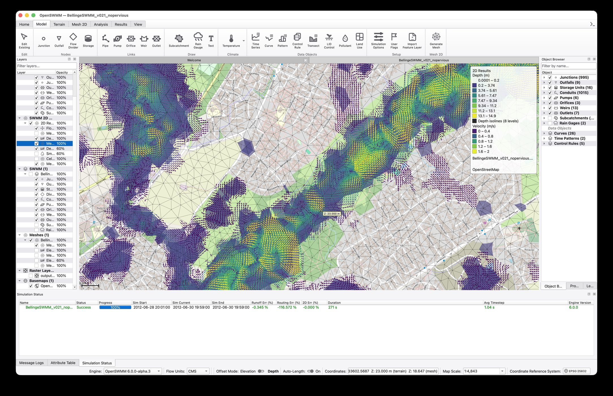
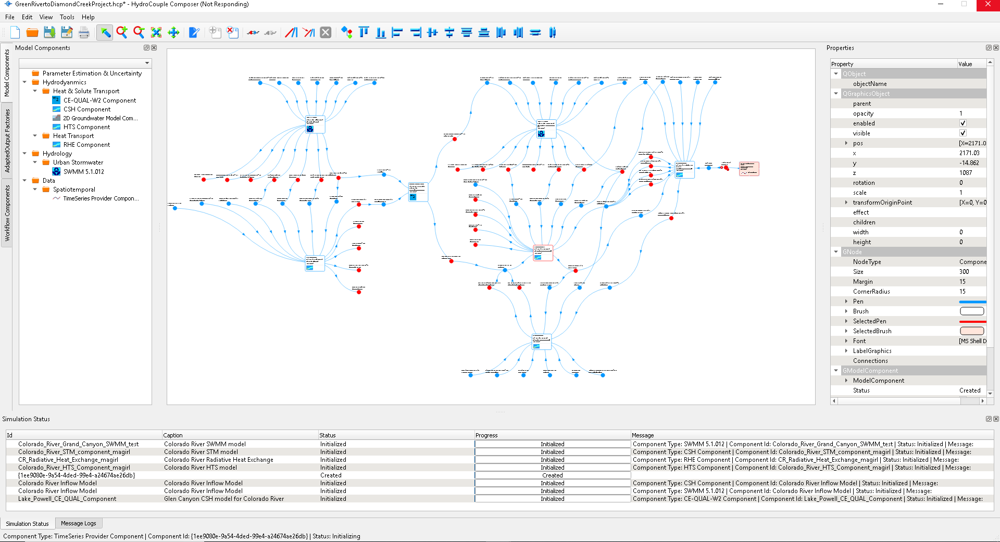

The HydroCouple Open-Source SWMM initiative delivers a next-generation SWMM as the flagship, plus a growing set of couplable components around it, so the same standards-based composition can grow from a single sewer model into a representation of the entire water cycle, from watersheds and aquifers to streams, lakes, and estuaries.
A community-driven continuation of EPA's Storm Water Management Model: the trusted process formulations, rebuilt on a modern architecture and validated against published benchmark suites, preserving the SWMM legacy under rigorous QA/QC while opening it to the future.
Next-generation computational engine. C++20, reentrant API, data-oriented core, plugin-based I/O, GeoPackage-native storage, Python bindings on PyPI, and coupled 1D/2D hydraulics with portable GPU backends.
Source → · PyPI → · Docs → · Python Docs →
A modern desktop application for building, running, and interrogating models, bringing the v6 engine to practicing engineers with contemporary UX.
Real-time control environments over the engine for smart stormwater operations, built on standard Gymnasium APIs.
Two-zone groundwater with runtime API access · physics-based RDII recovery · runtime climate forcing and per-subcatchment PET · consistent snow/rain partitioning · Anderson-accelerated dynamic wave convergence.
A dedicated benchmarking platform with 1,396 models and exact-solution verification · continuous integration on every platform · CodeQL and OpenSSF Scorecard · legacy EPA solver preserved unmodified for side-by-side comparison.
AI multiplies physics-based modeling. The ecosystem is built so the two reinforce each other: agents operate the models, learning algorithms control the infrastructure, and the physics engines supply the trustworthy, mass-conserving simulation that AI needs to train against and be checked by.
Through openswmm.mcp, AI agents assemble networks, edit parameters, run simulations, and interrogate results over the Model Context Protocol: expert modeling workflows expressed in plain language.
With openswmm.gymnasium, real-time control policies train against the engine to operate gates, pumps, and storage: smart stormwater control grounded in full hydraulic physics.
Surrogates, forecasts, and learned policies are only as good as their ground truth. A reentrant, benchmarked, mass-conserving engine, cloneable for ensembles through the HydroCouple interfaces, is the reference AI is validated against.
The tools in practice: the new engine and GUI resolving coupled 1D/2D urban flooding, and the Composer wiring components into coupled compositions.


Additional captures of the v6 engine are on the way: GPU-accelerated 2D solver runs, GeoPackage results exploration, terrain and mesh generation workflows, and agent-driven modeling sessions through the MCP tooling.
A model that governs public infrastructure decisions has to prove itself continuously. The OpenSWMM Benchmarks project is an open, engine-agnostic benchmarking and regression-testing platform for SWMM-compatible engines: a corpus of 1,396 models (EPA and OWA regression examples, the EXTRAN manual problems, the EPA QA suite with its original SWMM4 references, analytical problems with exact solutions, and real-world networks) run automatically and compared along the dimensions practitioners actually care about.
Does the solver converge? Does the timestep collapse? Runoff, routing, and quality continuity error tracked on every run.
Every subcatchment, node, link, and system variable, including pollutants, at every reported timestep, plus L1/L2/L∞ error norms and observed convergence order against exact solutions.
Wall-clock time per model per engine, tracked historically, so every speedup and every regression is documented with data.
Only cases with a genuine exact solution can show an engine is wrong; the rest can only show that engines differ. The platform keeps these apart deliberately: error norms are computed for truth-class cases alone, and the verification and regression scores are separate, separately-badged numbers. "1,396 models pass" is a regression claim and is always labeled as such.
Each ring below is a set of processes that exchange fluxes with the sewer and stream network SWMM simulates. Through the HydroCouple interfaces, each becomes a couplable component in a single composition.
Research-grade components developed and applied in peer-reviewed studies, implementing the HydroCouple interface definitions, spanning watershed runoff to receiving-water quality with CE-QUAL-W2.
The classic EPA SWMM 5 engine wrapped as a HydroCouple component, the original demonstration of sewer-network coupling.
A finite-volume watershed model for distributed rainfall–runoff simulation on unstructured meshes.
Vertically averaged groundwater flow for estimating groundwater–surface water exchange with streams and conduits.
Advection–dispersion of heat and solutes in channel networks, the backbone of the river temperature studies published with the framework.
Transient storage-zone exchange for stream temperature and solute dynamics in the hyporheic zone.
The widely used laterally averaged 2D hydrodynamic and water-quality model for lakes, reservoirs, and estuaries, maintained at Portland State University and wrapped as a couplable component connecting sewershed discharges to receiving-water response.
Loop-driven time-marching workflows and temporal-interpolation adapted outputs, the plumbing that reconciles components in time.
Development directions recorded in the public roadmap. Planned means planned: designs are studied and sequenced in the open before they are built, and priorities respond to community and utility needs.
A fully coupled two-layer subsurface kernel on the 2D mesh: moving water table, lateral Darcy exchange, saturation-excess runoff, and head-driven pipe–aquifer exchange.
Reduced-order models and spatial-field methods for propagating parameter and forcing uncertainty through coupled compositions at practical cost.
A fully three-dimensional finite volume hydrodynamic and water-quality model for rivers, estuaries, and stratified waterbodies, designed from the start as a HydroCouple component, so it couples directly with the SWMM2D engine and CE-QUAL-W2 for continuum studies from sewershed to receiving water.
Extended in-network and surface water-quality process formulations beyond legacy buildup–washoff, exposed as couplable components.
Yours. The interface definitions are open: wrap your model, and it couples with everything above.
A graphical environment for assembling coupled compositions: drag components onto a canvas, wire their exchange items, and execute.
The C++ software development kit for building conforming components, with base implementations of the interface definitions so wrapping a model starts from working code.